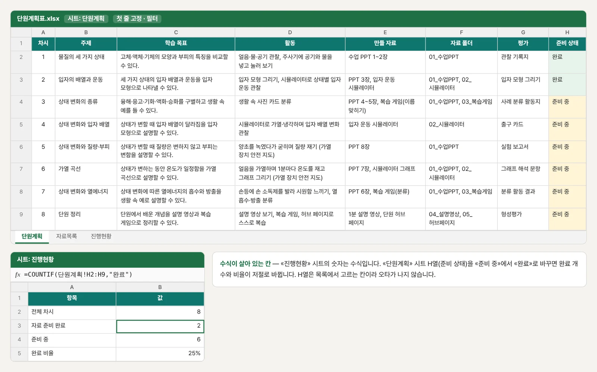
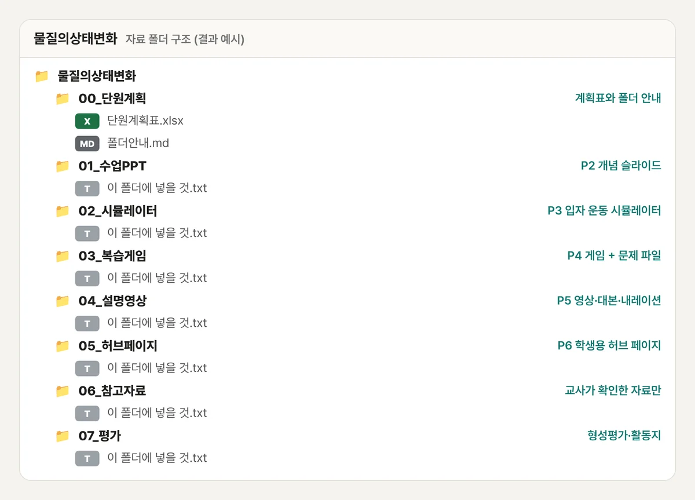

단원 설계와 자료 모으기
한 단원을 처음부터 끝까지 멀티미디어 자료로 만드는 프로젝트의 첫 쪽입니다. 코워크로 차시별 단원 계획표(엑셀)와 자료 폴더를 만들고, 흩어진 자료를 모읍니다.
- 목표
- 8차시 단원 계획표(차시·학습 목표·활동·만들 자료·평가)와, P2~P6 결과물을 담을 자료 폴더를 만든다 (예시: 중학교 과학 — 물질의 상태 변화)
- 준비물
클로드연수안에 만든 빈 폴더단원프로젝트(가지고 있는 이 단원 자료가 있으면 그 복사본)- 결과물
- ①
물질의상태변화폴더와 하위 폴더 8개 ②단원계획표.xlsx(시트 3개, 진행 현황은 수식) ③폴더안내.md - 주의
단원프로젝트폴더만 연결 · 어떤 파일도 지우지 않기 · 교과서 쪽수와 성취기준 번호는 교사가 직접 확인
Ⅵ장은 앞 차시에서 배운 방법을 한 단원에 이어 씁니다. P1에서 계획표와 폴더를 만들고, 수업 PPT → 시뮬레이터 → 복습 게임 → 설명 영상 → 허브 페이지 순서로 자료를 하나씩 채웁니다. 계획표를 먼저 만드는 까닭은 둘입니다. 어느 차시에 어떤 자료를 쓸지 정해 두어야 자료가 겹치거나 빠지지 않고, 폴더 이름을 미리 정해 두면 뒤쪽 프롬프트가 모두 같은 경로를 가리킵니다. 코워크에 계획을 먼저 받는 방법은 1차시와 같습니다.
| 쪽 | 도구 | 만드는 것 | 이어 쓰는 차시 |
|---|---|---|---|
| P1 | 코워크 | 단원 계획표(엑셀)와 자료 폴더 | 1차시 폴더 정리 |
| P2 | 코워크 | 개념 슬라이드 8장과 발표자 노트 | 2차시 강의자료 PPT |
| P3 | Code 탭 | 입자 운동 시뮬레이터 | 6차시 개념 시뮬레이터 |
| P4 | Code 탭 | 복습 게임 (이름 맞히기 + 열 흡수·방출 분류) | 7차시 복습 퀴즈 게임 |
| P5 | Code 탭 | 1분 설명 영상과 내레이션 | 14차시 설명 영상 · 17차시 내레이션 |
| P6 | Code 탭 + GitHub Pages | 단원 허브 페이지와 QR | 8차시 인터넷에 올리고 QR로 나누기 |
먼저 볼 영상

1 준비
클로드연수안에 빈 폴더단원프로젝트를 만듭니다.- 가지고 있는 이 단원 자료(학습지·실험 안내·지난해 PPT)가 있으면 복사본을
단원프로젝트/_모은자료에 넣습니다. 없으면 건너뜁니다. 학생 명단·성적 파일은 넣지 않습니다. - 시간이 없어 결과만 받아 다음 쪽으로 가려면 예시 폴더 물질의상태변화-폴더.zip 을
단원프로젝트안에 풉니다 (모두 연수용 가상 자료).
2 따라 하기
번호 순서대로 진행합니다. 프롬프트가 필요한 단계에는 바로 아래에 복사 단추가 있습니다.
- 클로드 데스크톱 앱에서 새 대화를 엽니다.
새 화면 메시지 상자에 바로 요청합니다. 예전 화면 메시지 상자에서 Cowork 를 먼저 고릅니다. - 메시지 상자에서 내 컴퓨터 폴더를 연결하는 단추를 눌러
클로드연수/단원프로젝트를 고릅니다. 단추 위치는 1차시 2번과 같고, 이름은 화면 문구를 따릅니다. - 권한 설정을 Manual(수동)로 바꿉니다. 폴더와 파일을 만들기 전에 클로드가 묻게 둡니다.
- 계획만 먼저 받습니다. 아래 프롬프트를 보내면 클로드가 8차시 계획 표와 폴더 구조안을 대화창에 보여 줍니다.
중학교 과학 '물질의 상태 변화' 단원을 8차시로 가르치려고 합니다. 먼저 단원 계획만 표로 보여 주세요. 아직 파일이나 폴더를 만들지 마세요. 단원에서 꼭 다룰 내용 - 고체·액체·기체의 특징과 입자의 배열·운동 - 상태 변화의 이름: 융해·응고·기화·액화·승화 (승화는 «고체→기체», «기체→고체» 방향을 함께 적기) - 상태 변화와 열에너지의 흡수·방출 - 상태가 변하는 동안 온도가 일정한 구간 (가열 곡선, 물은 1기압에서 0 °C·100 °C) - 상태가 변해도 질량은 변하지 않고 부피는 변한다 계획 표의 열: 차시 | 주제 | 학습 목표 | 활동 | 만들 자료 | 평가 - 학습 목표는 «~할 수 있다» 문장으로 - 만들 자료는 다음 중에서 고르기: 수업 PPT, 입자 운동 시뮬레이터, 복습 게임, 1분 설명 영상, 단원 허브 페이지 - 실험 활동에는 안전 지도 내용을 괄호로 함께 적기 - 평가는 수업 안에서 할 수 있는 것으로 (관찰 기록지, 활동지, 출구 카드, 형성평가) - 교과서 쪽수나 성취기준 번호는 지어내지 말고, 모르면 «교사 확인»이라고 쓰기 표 아래에 자료 폴더 구조안도 보여 주세요: 00_단원계획, 01_수업PPT, 02_시뮬레이터, 03_복습게임, 04_설명영상, 05_허브페이지, 06_참고자료, 07_평가
«만들 자료는 다음 중에서 고르기»가 이 쪽의 핵심 문장입니다. 계획 단계에서 P2~P6 결과물을 차시에 배치해 두면, 나중에 «이 자료를 몇 차시에 쓰지?»가 계획표 한 장으로 해결됩니다. «지어내지 말고 교사 확인»은 클로드가 그럴듯한 쪽수·성취기준 번호를 만들어 넣는 것을 막습니다.
캡처 넣을 곳 · P1-1
단원 계획 표 (따라 하기 4번).- 프롬프트 1에 대한 답 — 계획 표와 그 아래 폴더 구조안이 함께 보이게
- 계획을 읽고 고칠 점은 말로 고칩니다. 예: «6차시 실험은 얼음 대신 교과서 실험으로 바꿔 주세요», «평가는 차시마다 한 줄로 짧게»
- 만들기를 맡깁니다. 클로드가 폴더·파일을 만들기 전에 허락을 구하면 내용을 보고 승인합니다.
계획대로 만들어 주세요. 연결한 폴더 안에 «물질의상태변화» 폴더를 만들고, 그 안에 아래를 만들어 주세요. 1. 계획안의 하위 폴더 8개 (빈 폴더에는 «이 폴더에 넣을 것.txt» 에 한 줄 안내) 2. 00_단원계획/단원계획표.xlsx - 시트 «단원계획»: 차시 | 주제 | 학습 목표 | 활동 | 만들 자료 | 자료 폴더 | 평가 | 준비 상태 - «준비 상태»는 «완료, 준비 중» 목록에서 고르는 칸으로, 처음에는 모두 «준비 중» - 첫 줄 고정, 필터 켜기, 긴 글은 칸 안에서 줄 바꿈 - 시트 «자료목록»: 만들 자료 | 도구 | 파일 이름 | 폴더 | 쓰는 차시 - 시트 «진행현황»: 전체 차시, 준비 완료, 준비 중, 완료 비율 — 값을 직접 쓰지 말고 «단원계획» 시트를 세는 수식으로 3. 00_단원계획/폴더안내.md — 폴더마다 넣을 것과 파일 이름 규칙 어떤 파일도 지우지 마세요. 다 만들면 만든 폴더와 파일 목록을 보여 주세요.
«값을 직접 쓰지 말고 수식으로»를 넣어야 «진행현황» 시트가 살아 움직입니다. 자료를 하나 끝낼 때마다 «준비 상태»만 «완료»로 바꾸면 완료 개수와 비율이 저절로 바뀝니다. 코워크는 수식이 살아 있는 엑셀 파일을 돌려줍니다.
캡처 넣을 곳 · P1-2
허락을 구하는 화면 (따라 하기 6번).- 빨간 상자: 승인 단추
- 만들 폴더·파일 이름이 보이게
- (가진 자료가 있을 때)
_모은자료의 파일을 새 폴더로 나눕니다. 표를 보고 고친 뒤 «계획대로 옮기고, 자료목록 시트에 줄을 더해 주세요»라고 보냅니다.연결한 폴더의 «_모은자료» 안 파일을 모두 열어 보고, «물질의상태변화»의 어느 하위 폴더로 옮기면 좋을지 표로만 먼저 보여 주세요. 아직 옮기지 마세요. - 표: 원래 이름 | 옮길 폴더 | 새 이름 | 판단 근거 - 새 이름: [차시]_[자료 종류]_[내용].확장자 (예: 06_학습지_가열곡선그리기.docx) - 파일 이름만 보지 말고 내용을 열어 확인해서 분류하기 - 학생 이름·연락처·성적이 든 파일은 열지 말고 «_개인정보확인필요» 폴더로 - 어떤 파일도 지우지 않기
- 파일 탐색기(맥은 Finder)에서
물질의상태변화폴더를 열어 보고, 엑셀로단원계획표.xlsx를 엽니다. «단원계획» 시트 H열에서 1차시를 «완료»로 바꾸고 «진행현황» 시트의 숫자가 바뀌는지 봅니다.캡처 넣을 곳 · P1-3
엑셀에서 연 계획표 (따라 하기 8번).- 번호 표시: ① «단원계획» 시트 H열의 목록 단추 ② «진행현황» 시트의 수식(수식 입력줄)
- 마지막으로 검수를 맡깁니다.
단원계획표.xlsx 를 검수해 주세요. 1. 학습 목표·활동·평가가 차시마다 서로 맞는지 2. 과학 용어: 융해·응고·기화·액화·승화(방향 함께), 열 흡수(융해·기화·고체→기체 승화)와 방출(응고·액화·기체→고체 승화)이 바르게 쓰였는지 3. 물의 녹는점 0 °C·끓는점 100 °C 에 «1기압»이 붙어 있는지 4. 가열 실험에 안전 지도 내용이 있는지 5. «진행현황» 시트의 숫자가 모두 수식인지 (값을 직접 쓴 칸이 없는지) 틀린 곳은 고치고, 고친 내용을 한 줄씩 알려 주세요.
이 폴더(
물질의상태변화)를 P2~P6에서 계속 씁니다. 폴더 이름을 바꾸면 뒤쪽 프롬프트의 경로도 같이 바꿉니다.
3 결과 예시


예시 단원계획표.xlsx 내려받기 → · 예시 폴더 전체(zip) →
4 검증 포인트
② 목표–활동–평가 — 한 줄 안에서 서로 맞는지 봅니다. 목표가 «설명할 수 있다»인데 평가가 관찰 기록지뿐이면 고칩니다.
③ 과학 용어 — 승화에 방향이 적혀 있는지, 열 흡수(융해·기화·고체→기체 승화)와 방출(응고·액화·기체→고체 승화)이 바른지, 0 °C·100 °C 앞에 «1기압»이 있는지 봅니다.
④ 지어낸 정보 — 교과서 쪽수·성취기준 번호가 들어 있으면 교과서와 대조하고, 확인되지 않으면 지웁니다.
⑤ 수식 — «진행현황» 칸을 눌러 수식 입력줄에
=COUNTIF(…) 같은 수식이 보이는지 봅니다. 숫자만 쓰여 있으면 다시 요청합니다.⑥ 실험 안전 — 가열 실험이 있는 차시에 안전 지도 내용이 있는지 봅니다.
⑦ 지운 파일 — 3단계로 자료를 나눴다면 정리 전·후 파일 개수가 같은지 셉니다.
5 다른 단원에 적용하기
따라 하기 4단계 프롬프트 1 대신 아래 교과 단원 프롬프트를 씁니다. 6단계와 9단계는 단원 이름이 들어가지 않은 아래 공통 프롬프트로 바꿔 씁니다. 차시 수는 예시이니 학교 계획에 맞게 고칩니다. P2~P6에도 같은 14개 단원의 프롬프트가 있어서, 한 교과를 골라 끝까지 따라갈 수 있습니다.
계획대로 만들어 주세요. 연결한 폴더 안에 단원 이름으로 폴더를 만들고(띄어쓰기 없이), 그 안에 아래를 만들어 주세요. 1. 계획안의 하위 폴더 8개 (빈 폴더에는 «이 폴더에 넣을 것.txt» 에 한 줄 안내) 2. 00_단원계획/단원계획표.xlsx - 시트 «단원계획»: 차시 | 주제 | 학습 목표 | 활동 | 만들 자료 | 자료 폴더 | 평가 | 준비 상태 - «준비 상태»는 «완료, 준비 중» 목록에서 고르는 칸으로, 처음에는 모두 «준비 중» - 첫 줄 고정, 필터 켜기, 긴 글은 칸 안에서 줄 바꿈 - 시트 «자료목록»: 만들 자료 | 도구 | 파일 이름 | 폴더 | 쓰는 차시 - 시트 «진행현황»: 전체 차시, 준비 완료, 준비 중, 완료 비율 — 값을 직접 쓰지 말고 «단원계획» 시트를 세는 수식으로 3. 00_단원계획/폴더안내.md — 폴더마다 넣을 것과 파일 이름 규칙 어떤 파일도 지우지 마세요. 다 만들면 만든 폴더와 파일 목록을 보여 주세요.
단원계획표.xlsx 를 검수해 주세요. 1. 학습 목표·활동·평가가 차시마다 서로 맞는지 2. 교과 용어가 교과서와 다른 곳이 있는지 3. 교과서 쪽수·성취기준 번호·숫자 자료 가운데 근거 없이 들어간 것이 있는지 (있으면 «교사 확인»으로 바꾸기) 4. «진행현황» 시트의 숫자가 모두 수식인지 틀린 곳은 고치고, 고친 내용을 한 줄씩 알려 주세요.
국어비유와 상징6차시 계획 · 탐구 도구는 «표현 바꾸기 탐구 도구»
중학교 국어 '비유와 상징' 단원을 6차시로 가르치려고 합니다. 먼저 단원 계획만 표로 보여 주세요. 아직 파일이나 폴더를 만들지 마세요. 단원에서 꼭 다룰 내용 - 직유·은유·의인·상징의 뜻과 효과 - 시에서 비유와 상징을 찾아 의미 해석하기 - 비유를 써서 짧은 시 쓰기 계획 표의 열: 차시 | 주제 | 학습 목표 | 활동 | 만들 자료 | 평가 - 학습 목표는 «~할 수 있다» 문장으로 - 만들 자료는 다음 중에서 고르기: 수업 PPT, 표현 바꾸기 탐구 도구, 복습 게임, 1분 설명 영상, 단원 허브 페이지 - 평가는 수업 안에서 할 수 있는 것으로 (관찰, 활동지, 출구 카드, 형성평가) - 시는 교사가 첨부한 작품(교사가 쓴 시나 저작권이 끝난 작품)만 쓰고, 다른 작품을 지어내거나 인용하지 않기 - 교과서 쪽수나 성취기준 번호는 지어내지 말고, 모르면 «교사 확인»이라고 쓰기 표 아래에 자료 폴더 구조안도 보여 주세요: 00_단원계획, 01_수업PPT, 02_탐구도구, 03_복습게임, 04_설명영상, 05_허브페이지, 06_참고자료, 07_평가
수학일차함수와 그래프8차시 계획 · 탐구 도구는 «일차함수 그래프 탐구기»
중학교 수학 '일차함수와 그래프' 단원을 8차시로 가르치려고 합니다. 먼저 단원 계획만 표로 보여 주세요. 아직 파일이나 폴더를 만들지 마세요. 단원에서 꼭 다룰 내용 - 일차함수 y = ax + b 의 뜻 - 그래프 그리기, x절편과 y절편 - 기울기의 뜻과 그래프의 모양 - 일차함수를 활용한 문제 해결 계획 표의 열: 차시 | 주제 | 학습 목표 | 활동 | 만들 자료 | 평가 - 학습 목표는 «~할 수 있다» 문장으로 - 만들 자료는 다음 중에서 고르기: 수업 PPT, 일차함수 그래프 탐구기, 복습 게임, 1분 설명 영상, 단원 허브 페이지 - 평가는 수업 안에서 할 수 있는 것으로 (관찰, 활동지, 출구 카드, 형성평가) - 식과 그래프 표기는 교과서처럼 쓰기 (예: y = 2x − 1), 계산값은 스스로 검산하기 - 교과서 쪽수나 성취기준 번호는 지어내지 말고, 모르면 «교사 확인»이라고 쓰기 표 아래에 자료 폴더 구조안도 보여 주세요: 00_단원계획, 01_수업PPT, 02_탐구도구, 03_복습게임, 04_설명영상, 05_허브페이지, 06_참고자료, 07_평가
영어과거 시제로 경험 말하기6차시 계획 · 탐구 도구는 «동사 변신 탐구기»
중학교 영어 '과거 시제로 경험 말하기' 단원을 6차시로 가르치려고 합니다. 먼저 단원 계획만 표로 보여 주세요. 아직 파일이나 폴더를 만들지 마세요. 단원에서 꼭 다룰 내용 - 규칙 동사의 과거형(-ed)과 불규칙 동사 - 과거 시제 의문문과 부정문 (did, didn't) - 지난 주말 경험을 말하고 쓰기 계획 표의 열: 차시 | 주제 | 학습 목표 | 활동 | 만들 자료 | 평가 - 학습 목표는 «~할 수 있다» 문장으로 - 만들 자료는 다음 중에서 고르기: 수업 PPT, 동사 변신 탐구기, 복습 게임, 1분 설명 영상, 단원 허브 페이지 - 평가는 수업 안에서 할 수 있는 것으로 (관찰, 활동지, 출구 카드, 형성평가) - 예문은 교사가 첨부한 예문.txt 와 교과서 수준 어휘로, 불규칙 동사는 첨부한 동사표.csv 기준으로 - 교과서 쪽수나 성취기준 번호는 지어내지 말고, 모르면 «교사 확인»이라고 쓰기 표 아래에 자료 폴더 구조안도 보여 주세요: 00_단원계획, 01_수업PPT, 02_탐구도구, 03_복습게임, 04_설명영상, 05_허브페이지, 06_참고자료, 07_평가
과학기체의 압력·온도와 부피6차시 계획 · 탐구 도구는 «기체 법칙 탐구기»
중학교 과학 '기체의 압력·온도와 부피' 단원을 6차시로 가르치려고 합니다. 먼저 단원 계획만 표로 보여 주세요. 아직 파일이나 폴더를 만들지 마세요. 단원에서 꼭 다룰 내용 - 기체 입자의 운동과 압력 - 압력과 부피의 관계 (보일 법칙, 온도 일정) - 온도와 부피의 관계 (샤를 법칙, 압력 일정) - 생활 속 예 계획 표의 열: 차시 | 주제 | 학습 목표 | 활동 | 만들 자료 | 평가 - 학습 목표는 «~할 수 있다» 문장으로 - 만들 자료는 다음 중에서 고르기: 수업 PPT, 기체 법칙 탐구기, 복습 게임, 1분 설명 영상, 단원 허브 페이지 - 평가는 수업 안에서 할 수 있는 것으로 (관찰, 활동지, 출구 카드, 형성평가) - 법칙에는 «온도 일정», «압력 일정» 조건을 언제나 함께 적기 - 교과서 쪽수나 성취기준 번호는 지어내지 말고, 모르면 «교사 확인»이라고 쓰기 표 아래에 자료 폴더 구조안도 보여 주세요: 00_단원계획, 01_수업PPT, 02_탐구도구, 03_복습게임, 04_설명영상, 05_허브페이지, 06_참고자료, 07_평가
사회기후와 생활7차시 계획 · 탐구 도구는 «기후 그래프 탐구기»
중학교 사회 '기후와 생활' 단원을 7차시로 가르치려고 합니다. 먼저 단원 계획만 표로 보여 주세요. 아직 파일이나 폴더를 만들지 마세요. 단원에서 꼭 다룰 내용 - 기온과 강수량으로 본 기후 구분 - 열대·건조·온대·냉대·한대 기후 지역의 생활 - 기후 그래프 읽기 계획 표의 열: 차시 | 주제 | 학습 목표 | 활동 | 만들 자료 | 평가 - 학습 목표는 «~할 수 있다» 문장으로 - 만들 자료는 다음 중에서 고르기: 수업 PPT, 기후 그래프 탐구기, 복습 게임, 1분 설명 영상, 단원 허브 페이지 - 평가는 수업 안에서 할 수 있는 것으로 (관찰, 활동지, 출구 카드, 형성평가) - 기온·강수량 숫자는 교사가 첨부한 기후자료.csv 만 쓰고 지어내지 않기, 출처를 함께 적기 - 교과서 쪽수나 성취기준 번호는 지어내지 말고, 모르면 «교사 확인»이라고 쓰기 표 아래에 자료 폴더 구조안도 보여 주세요: 00_단원계획, 01_수업PPT, 02_탐구도구, 03_복습게임, 04_설명영상, 05_허브페이지, 06_참고자료, 07_평가
역사조선의 건국과 발전7차시 계획 · 탐구 도구는 «조선 전기 연표 탐색기»
중학교 역사 '조선의 건국과 발전' 단원을 7차시로 가르치려고 합니다. 먼저 단원 계획만 표로 보여 주세요. 아직 파일이나 폴더를 만들지 마세요. 단원에서 꼭 다룰 내용 - 조선의 건국 과정 - 통치 체제의 정비 - 세종 대의 문화 발전 - 사림의 성장 계획 표의 열: 차시 | 주제 | 학습 목표 | 활동 | 만들 자료 | 평가 - 학습 목표는 «~할 수 있다» 문장으로 - 만들 자료는 다음 중에서 고르기: 수업 PPT, 조선 전기 연표 탐색기, 복습 게임, 1분 설명 영상, 단원 허브 페이지 - 평가는 수업 안에서 할 수 있는 것으로 (관찰, 활동지, 출구 카드, 형성평가) - 연도·인물·사건은 교사가 첨부한 연표.csv 와 교과서 기준으로만 쓰고, 없는 사실을 지어내지 않기 - 교과서 쪽수나 성취기준 번호는 지어내지 말고, 모르면 «교사 확인»이라고 쓰기 표 아래에 자료 폴더 구조안도 보여 주세요: 00_단원계획, 01_수업PPT, 02_탐구도구, 03_복습게임, 04_설명영상, 05_허브페이지, 06_참고자료, 07_평가
도덕갈등의 평화적 해결5차시 계획 · 탐구 도구는 «갈등 장면 선택 이야기»
중학교 도덕 '갈등의 평화적 해결' 단원을 5차시로 가르치려고 합니다. 먼저 단원 계획만 표로 보여 주세요. 아직 파일이나 폴더를 만들지 마세요. 단원에서 꼭 다룰 내용 - 갈등이 생기는 까닭 - 평화적 해결 방법 (대화·협상·조정) - 공감하며 듣기와 나-전달법 - 학급 갈등 사례 토의 계획 표의 열: 차시 | 주제 | 학습 목표 | 활동 | 만들 자료 | 평가 - 학습 목표는 «~할 수 있다» 문장으로 - 만들 자료는 다음 중에서 고르기: 수업 PPT, 갈등 장면 선택 이야기, 복습 게임, 1분 설명 영상, 단원 허브 페이지 - 평가는 수업 안에서 할 수 있는 것으로 (관찰, 활동지, 출구 카드, 형성평가) - 사례는 교사가 쓴 가상 사례만 쓰고, 실제 학생·학교를 떠올리게 하는 이름이나 설정을 넣지 않기 - 교과서 쪽수나 성취기준 번호는 지어내지 말고, 모르면 «교사 확인»이라고 쓰기 표 아래에 자료 폴더 구조안도 보여 주세요: 00_단원계획, 01_수업PPT, 02_탐구도구, 03_복습게임, 04_설명영상, 05_허브페이지, 06_참고자료, 07_평가
기술·가정청소년의 영양과 식사6차시 계획 · 탐구 도구는 «한 끼 식단 짜기 탐구기»
중학교 기술·가정 '청소년의 영양과 식사' 단원을 6차시로 가르치려고 합니다. 먼저 단원 계획만 표로 보여 주세요. 아직 파일이나 폴더를 만들지 마세요. 단원에서 꼭 다룰 내용 - 5대 영양소의 기능과 급원 식품 - 청소년기의 영양 섭취 - 식품 구성 자전거로 식사 살펴보기 - 균형 잡힌 식단 짜기 계획 표의 열: 차시 | 주제 | 학습 목표 | 활동 | 만들 자료 | 평가 - 학습 목표는 «~할 수 있다» 문장으로 - 만들 자료는 다음 중에서 고르기: 수업 PPT, 한 끼 식단 짜기 탐구기, 복습 게임, 1분 설명 영상, 단원 허브 페이지 - 평가는 수업 안에서 할 수 있는 것으로 (관찰, 활동지, 출구 카드, 형성평가) - 영양 수치는 교사가 첨부한 자료만 쓰고 출처를 밝히기, 의학적 조언처럼 쓰지 않기 - 교과서 쪽수나 성취기준 번호는 지어내지 말고, 모르면 «교사 확인»이라고 쓰기 표 아래에 자료 폴더 구조안도 보여 주세요: 00_단원계획, 01_수업PPT, 02_탐구도구, 03_복습게임, 04_설명영상, 05_허브페이지, 06_참고자료, 07_평가
정보정렬 알고리즘6차시 계획 · 탐구 도구는 «정렬 단계 탐구기»
중학교 정보 '정렬 알고리즘' 단원을 6차시로 가르치려고 합니다. 먼저 단원 계획만 표로 보여 주세요. 아직 파일이나 폴더를 만들지 마세요. 단원에서 꼭 다룰 내용 - 알고리즘의 뜻과 조건 - 선택 정렬과 버블 정렬의 과정 - 비교 횟수로 효율 비교하기 - 정렬을 코드로 나타내기 계획 표의 열: 차시 | 주제 | 학습 목표 | 활동 | 만들 자료 | 평가 - 학습 목표는 «~할 수 있다» 문장으로 - 만들 자료는 다음 중에서 고르기: 수업 PPT, 정렬 단계 탐구기, 복습 게임, 1분 설명 영상, 단원 허브 페이지 - 평가는 수업 안에서 할 수 있는 것으로 (관찰, 활동지, 출구 카드, 형성평가) - 알고리즘 이름과 과정은 교과서 용어로, 비교 횟수는 직접 세어 검산하기 - 교과서 쪽수나 성취기준 번호는 지어내지 말고, 모르면 «교사 확인»이라고 쓰기 표 아래에 자료 폴더 구조안도 보여 주세요: 00_단원계획, 01_수업PPT, 02_탐구도구, 03_복습게임, 04_설명영상, 05_허브페이지, 06_참고자료, 07_평가
음악우리 음악의 장단5차시 계획 · 탐구 도구는 «장단 메트로놈»
중학교 음악 '우리 음악의 장단' 단원을 5차시로 가르치려고 합니다. 먼저 단원 계획만 표로 보여 주세요. 아직 파일이나 폴더를 만들지 마세요. 단원에서 꼭 다룰 내용 - 장단의 뜻 - 여러 장단의 빠르기와 느낌 - 장구로 장단 치기 - 민요에 장단 맞추기 계획 표의 열: 차시 | 주제 | 학습 목표 | 활동 | 만들 자료 | 평가 - 학습 목표는 «~할 수 있다» 문장으로 - 만들 자료는 다음 중에서 고르기: 수업 PPT, 장단 메트로놈, 복습 게임, 1분 설명 영상, 단원 허브 페이지 - 평가는 수업 안에서 할 수 있는 것으로 (관찰, 활동지, 출구 카드, 형성평가) - 장단 이름·박·장구 구음은 교사가 첨부한 장단표.txt 만 쓰고 지어내지 않기, 음원은 넣지 않기 - 교과서 쪽수나 성취기준 번호는 지어내지 말고, 모르면 «교사 확인»이라고 쓰기 표 아래에 자료 폴더 구조안도 보여 주세요: 00_단원계획, 01_수업PPT, 02_탐구도구, 03_복습게임, 04_설명영상, 05_허브페이지, 06_참고자료, 07_평가
미술색의 3요소와 배색5차시 계획 · 탐구 도구는 «색의 3요소 탐구기»
중학교 미술 '색의 3요소와 배색' 단원을 5차시로 가르치려고 합니다. 먼저 단원 계획만 표로 보여 주세요. 아직 파일이나 폴더를 만들지 마세요. 단원에서 꼭 다룰 내용 - 색상·명도·채도 - 색상환과 보색·유사색 - 배색이 주는 느낌 - 배색으로 포스터 꾸미기 계획 표의 열: 차시 | 주제 | 학습 목표 | 활동 | 만들 자료 | 평가 - 학습 목표는 «~할 수 있다» 문장으로 - 만들 자료는 다음 중에서 고르기: 수업 PPT, 색의 3요소 탐구기, 복습 게임, 1분 설명 영상, 단원 허브 페이지 - 평가는 수업 안에서 할 수 있는 것으로 (관찰, 활동지, 출구 카드, 형성평가) - 화면의 색과 물감 색이 다를 수 있다고 밝히기, 다른 사람의 작품 이미지는 넣지 않기 - 교과서 쪽수나 성취기준 번호는 지어내지 말고, 모르면 «교사 확인»이라고 쓰기 표 아래에 자료 폴더 구조안도 보여 주세요: 00_단원계획, 01_수업PPT, 02_탐구도구, 03_복습게임, 04_설명영상, 05_허브페이지, 06_참고자료, 07_평가
체육건강 체력과 운동 강도5차시 계획 · 탐구 도구는 «목표 심박수 계산기»
중학교 체육 '건강 체력과 운동 강도' 단원을 5차시로 가르치려고 합니다. 먼저 단원 계획만 표로 보여 주세요. 아직 파일이나 폴더를 만들지 마세요. 단원에서 꼭 다룰 내용 - 건강 체력 요소 (심폐지구력·근력·근지구력·유연성·신체 구성) - 운동 강도와 심박수 - 나에게 맞는 운동 계획 세우기 계획 표의 열: 차시 | 주제 | 학습 목표 | 활동 | 만들 자료 | 평가 - 학습 목표는 «~할 수 있다» 문장으로 - 만들 자료는 다음 중에서 고르기: 수업 PPT, 목표 심박수 계산기, 복습 게임, 1분 설명 영상, 단원 허브 페이지 - 평가는 수업 안에서 할 수 있는 것으로 (관찰, 활동지, 출구 카드, 형성평가) - 심박수 공식과 출처를 밝히고, 의학적 판단이 아니라고 적기, 학생 측정 기록은 넣지 않기 - 교과서 쪽수나 성취기준 번호는 지어내지 말고, 모르면 «교사 확인»이라고 쓰기 표 아래에 자료 폴더 구조안도 보여 주세요: 00_단원계획, 01_수업PPT, 02_탐구도구, 03_복습게임, 04_설명영상, 05_허브페이지, 06_참고자료, 07_평가
진로직업 세계 탐색5차시 계획 · 탐구 도구는 «직업 카드 탐색기»
중학교 진로 '직업 세계 탐색' 단원을 5차시로 가르치려고 합니다. 먼저 단원 계획만 표로 보여 주세요. 아직 파일이나 폴더를 만들지 마세요. 단원에서 꼭 다룰 내용 - 직업의 의미 - 직업의 종류와 변화 - 관심 직업 정보 찾기 - 진로 포트폴리오 정리 계획 표의 열: 차시 | 주제 | 학습 목표 | 활동 | 만들 자료 | 평가 - 학습 목표는 «~할 수 있다» 문장으로 - 만들 자료는 다음 중에서 고르기: 수업 PPT, 직업 카드 탐색기, 복습 게임, 1분 설명 영상, 단원 허브 페이지 - 평가는 수업 안에서 할 수 있는 것으로 (관찰, 활동지, 출구 카드, 형성평가) - 직업 정보(하는 일·준비 과정)는 교사가 확인한 직업카드.csv 만 쓰고 출처를 밝히기, 임금·전망 숫자는 넣지 않기 - 교과서 쪽수나 성취기준 번호는 지어내지 말고, 모르면 «교사 확인»이라고 쓰기 표 아래에 자료 폴더 구조안도 보여 주세요: 00_단원계획, 01_수업PPT, 02_탐구도구, 03_복습게임, 04_설명영상, 05_허브페이지, 06_참고자료, 07_평가
한문한자의 짜임5차시 계획 · 탐구 도구는 «한자 짜임 탐구기»
중학교 한문 '한자의 짜임' 단원을 5차시로 가르치려고 합니다. 먼저 단원 계획만 표로 보여 주세요. 아직 파일이나 폴더를 만들지 마세요. 단원에서 꼭 다룰 내용 - 상형·지사·회의·형성의 뜻 - 부수와 한자의 짜임 - 형성자의 뜻 부분과 음 부분 계획 표의 열: 차시 | 주제 | 학습 목표 | 활동 | 만들 자료 | 평가 - 학습 목표는 «~할 수 있다» 문장으로 - 만들 자료는 다음 중에서 고르기: 수업 PPT, 한자 짜임 탐구기, 복습 게임, 1분 설명 영상, 단원 허브 페이지 - 평가는 수업 안에서 할 수 있는 것으로 (관찰, 활동지, 출구 카드, 형성평가) - 한자 예와 풀이는 교사가 첨부한 한자목록.csv 만 쓰고 지어내지 않기 - 교과서 쪽수나 성취기준 번호는 지어내지 말고, 모르면 «교사 확인»이라고 쓰기 표 아래에 자료 폴더 구조안도 보여 주세요: 00_단원계획, 01_수업PPT, 02_탐구도구, 03_복습게임, 04_설명영상, 05_허브페이지, 06_참고자료, 07_평가
한 단원을 여러 자료로 만들 때는 계획표가 설계도입니다. 차시마다 목표–활동–자료–평가를 한 줄에 맞춰 두면 자료가 겹치거나 빠지지 않습니다. 코워크에는 계획을 먼저 받고, 숫자 칸은 수식으로 만들게 해서 고칠 때마다 저절로 맞게 합니다. 폴더 이름을 처음에 정해 두면 뒤쪽 프롬프트가 모두 같은 경로를 씁니다.
· 폴더 연결 단추가 없다 — 웹(claude.ai)이 아니라 데스크톱 앱인지 확인합니다. 내 컴퓨터 폴더는 데스크톱 앱에서 연결합니다.
· 작업이 중간에 멈췄다 — 내 컴퓨터의 파일을 다루는 동안에는 데스크톱 앱이 켜져 있어야 합니다.
· «진행현황»에 숫자 대신 수식 글자가 보인다 — 칸 서식이 텍스트로 되어 있을 수 있습니다. «진행현황 시트의 수식이 계산되지 않아요. 칸 서식을 확인해 고쳐 주세요»라고 요청합니다.
· «준비 상태»에 목록 단추가 없다 — «H열을 ‘완료, 준비 중’ 목록에서 고르는 칸(데이터 유효성 검사)으로 만들어 주세요»라고 다시 요청합니다.
· 계획이 우리 교과서 순서와 다르다 — 교과서 차례를 교사가 직접 적은 메모(예:
단원메모.txt)를 폴더에 넣고 «이 메모의 차시 순서를 따라 다시 계획해 주세요»라고 합니다. 교과서 지문이나 그림을 스캔해 넣지는 않습니다.
더 보기

출처: Claude 도움말 Get started with Claude Cowork (데스크톱에서 내 컴퓨터 파일 읽고 쓰기, 수식이 살아 있는 엑셀) · Create and edit files with Claude (만들 수 있는 파일: xlsx·pptx·docx·PDF) (2026-11-11 확인)